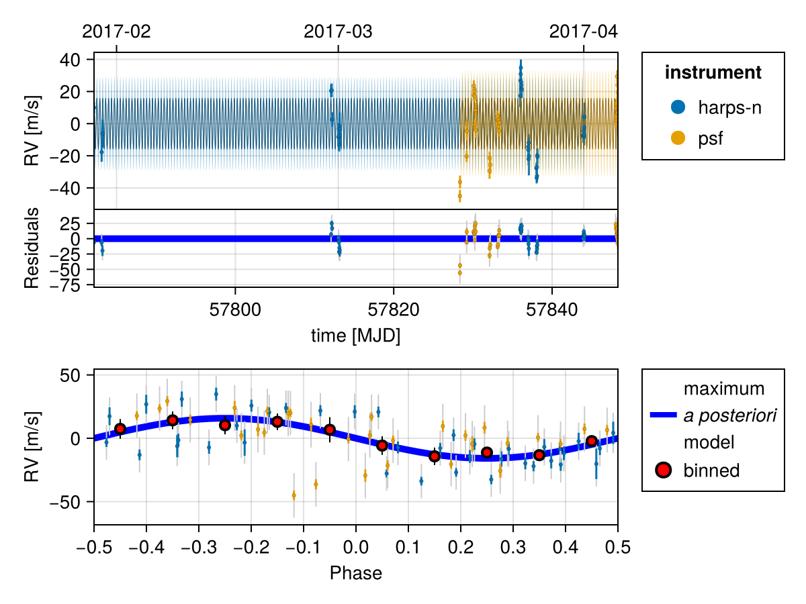
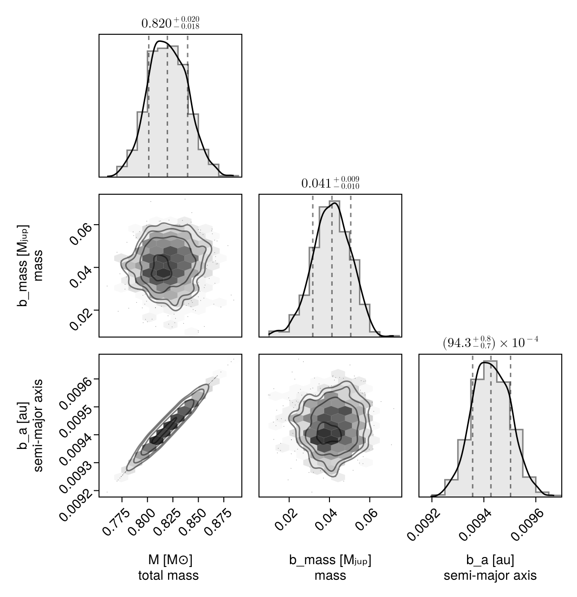
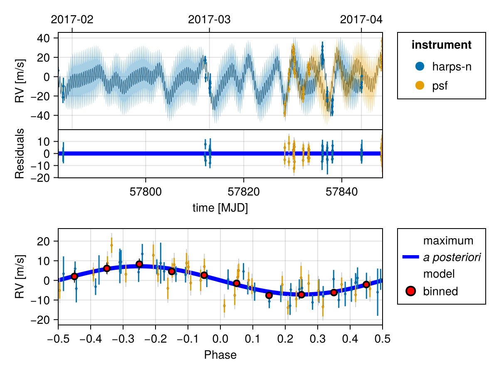
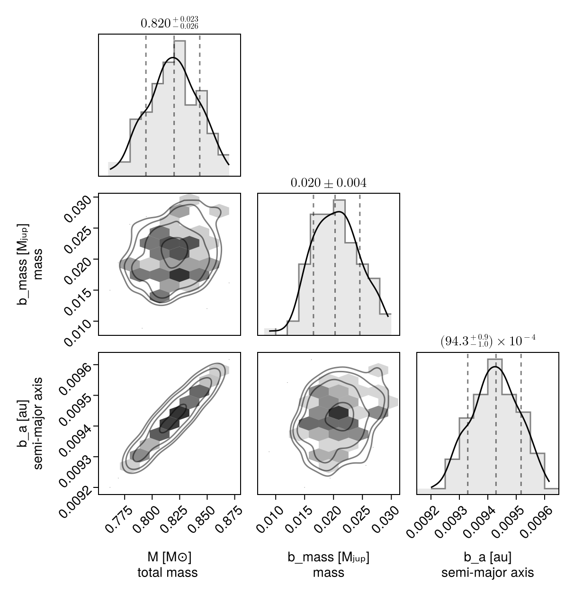

Fit Radial Velocity
You can use Octofitter to fit radial velocity data, either alone or in combination with other kinds of data. Multiple instruments (up to 10) are supported, as are gaussian processes to model stellar activity..
Radial velocity modelling is supported in Octofitter via the extension package OctofitterRadialVelocity. To install it, run pkg> add OctofitterRadialVelocity
For this example, we will fit the orbit of the planet K2-131 to perform the same fit as in the RadVel Gaussian Process Fitting tutorial.
We will use the following packages:
using Octofitter
using OctofitterRadialVelocity
using PlanetOrbits
using CairoMakie
using PairPlots
using CSV
using DataFrames
using DistributionsWe will start by downloading and preparing a table of radial velocity measurements, and create a StarAbsoluteRVLikelihood object to hold them.
The following functions allow you to directly load data from various public RV databases:
HARPS_DR1_rvs("star-name")HARPS_RVBank_observations("star-name")Lick_rvs("star-name")HIRES_rvs("star-name")
Basic Fit
Start by fitting a 1-planet Keplerian model.
Calling those functions with the name of a star will return a StarAbsoluteRVLikelihood table.
If you would like to manually specify RV data, use the following format:
rv_like = StarAbsoluteRVLikelihood(
# epoch is in units of MJD. `jd` is a helper function to convert.
# you can also put `years2mjd(2016.1231)`.
# rv and σ_rv are in units of meters/second
(;inst_idx=1, epoch=jd(2455110.97985), rv=−6.54, σ_rv=1.30),
(;inst_idx=1, epoch=jd(2455171.90825), rv=−3.33, σ_rv=1.09),
# ... etc.
)For this example, to replicate the results of RadVel, we will download their example data for K2-131. and format it for Octofitter:
rv_file = download("https://raw.githubusercontent.com/California-Planet-Search/radvel/master/example_data/k2-131.txt")
rv_dat_raw = CSV.read(rv_file, DataFrame, delim=' ')
rv_dat = DataFrame();
rv_dat.epoch = jd2mjd.(rv_dat_raw.time)
rv_dat.rv = rv_dat_raw.mnvel
rv_dat.σ_rv = rv_dat_raw.errvel
tels = sort(unique(rv_dat_raw.tel))
rv_dat.inst_idx = map(rv_dat_raw.tel) do tel
findfirst(==(tel), tels)
end
rvlike = StarAbsoluteRVLikelihood(
rv_dat,
instrument_names=["harps-n", "psf"],
)StarAbsoluteRVLikelihood Table with 4 columns and 70×1 rows:
epoch rv σ_rv inst_idx
┌───────────────────────────────────
1,1 │ 57782.2 -6682.78 3.71 1
2,1 │ 57783.1 -6710.55 5.95 1
3,1 │ 57783.2 -6698.96 8.76 1
4,1 │ 57812.1 -6672.32 4.0 1
5,1 │ 57812.2 -6672.0 4.22 1
6,1 │ 57812.2 -6690.31 4.63 1
7,1 │ 57813.0 -6701.27 4.12 1
8,1 │ 57813.1 -6700.71 5.34 1
9,1 │ 57813.1 -6695.97 3.67 1
10,1 │ 57813.1 -6705.87 4.23 1
11,1 │ 57813.1 -6694.27 5.12 1
12,1 │ 57813.2 -6699.99 5.0 1
13,1 │ 57813.2 -6696.17 10.43 1
14,1 │ 57836.0 -6675.4 7.03 1
15,1 │ 57836.0 -6665.92 7.48 1
16,1 │ 57836.0 -6661.9 6.03 1
17,1 │ 57836.1 -6657.92 5.08 1
⋮ │ ⋮ ⋮ ⋮ ⋮Now, create a planet. We can use the RadialVelocityOrbit type from PlanetOrbits.jl that requires fewer parameters (eg no inclination or longitude of ascending node). We could instead use a Visual{KepOrbit} or similar if we wanted to include these parameters and visualize the orbit in the plane of the sky.
@planet b RadialVelocityOrbit begin
e = 0
ω = 0.0
# To match RadVel, we set a prior on Period and calculate semi-major axis from it
P ~ truncated(Normal(0.3693038/365.256360417, 0.0000091/365.256360417),lower=0.00001)
a = cbrt(system.M * b.P^2) # note the equals sign.
τ ~ UniformCircular(1.0)
tp = b.τ*b.P*365.256360417 + 57782 # reference epoch for τ. Choose an MJD date near your data.
# minimum planet mass [jupiter masses]. really m*sin(i)
mass ~ LogUniform(0.001, 10)
end
@system k2_132 begin
# total mass [solar masses]
M ~ truncated(Normal(0.82, 0.02),lower=0) # (Baines & Armstrong 2011).
# HARPS-N
rv0_1 ~ Normal(0,10000) # m/s
jitter_1 ~ LogUniform(0.01,100) # m/s
# FPS
rv0_2 ~ Normal(0,10000) # m/s
jitter_2 ~ LogUniform(0.01,100) # m/s
end rvlike bSystem model k2_132
Derived:
Priors:
M Truncated(Distributions.Normal{Float64}(μ=0.82, σ=0.02); lower=0.0)
rv0_1 Distributions.Normal{Float64}(μ=0.0, σ=10000.0)
jitter_1 Distributions.LogUniform{Float64}(a=0.01, b=100.0)
rv0_2 Distributions.Normal{Float64}(μ=0.0, σ=10000.0)
jitter_2 Distributions.LogUniform{Float64}(a=0.01, b=100.0)
Planet b
Derived:
e, ω, a, τ, tp,
Priors:
P Truncated(Distributions.Normal{Float64}(μ=0.001011081092683449, σ=2.4914008313533153e-8); lower=1.0e-5)
τy Distributions.Normal{Float64}(μ=0.0, σ=1.0)
τx Distributions.Normal{Float64}(μ=0.0, σ=1.0)
mass Distributions.LogUniform{Float64}(a=0.001, b=10.0)
Octofitter.UnitLengthPrior{:τy, :τx}: √(τy^2+τx^2) ~ LogNormal(log(1), 0.02)
StarAbsoluteRVLikelihood Table with 4 columns and 70×1 rows:
epoch rv σ_rv inst_idx
┌───────────────────────────────────
1,1 │ 57782.2 -6682.78 3.71 1
2,1 │ 57783.1 -6710.55 5.95 1
3,1 │ 57783.2 -6698.96 8.76 1
4,1 │ 57812.1 -6672.32 4.0 1
5,1 │ 57812.2 -6672.0 4.22 1
6,1 │ 57812.2 -6690.31 4.63 1
7,1 │ 57813.0 -6701.27 4.12 1
8,1 │ 57813.1 -6700.71 5.34 1
9,1 │ 57813.1 -6695.97 3.67 1
10,1 │ 57813.1 -6705.87 4.23 1
11,1 │ 57813.1 -6694.27 5.12 1
12,1 │ 57813.2 -6699.99 5.0 1
13,1 │ 57813.2 -6696.17 10.43 1
14,1 │ 57836.0 -6675.4 7.03 1
15,1 │ 57836.0 -6665.92 7.48 1
16,1 │ 57836.0 -6661.9 6.03 1
17,1 │ 57836.1 -6657.92 5.08 1
⋮ │ ⋮ ⋮ ⋮ ⋮
Note how the rvlike object was attached to the k2_132 system instead of the planet. This is because the observed radial velocity is of the star, and is caused by any/all orbiting planets.
The rv0 and jitter parameters specify priors for the instrument-specific offset and white noise jitter standard deviation. The _i index matches the inst_idx used to create the observation table.
Note also here that the mass variable is really msini, or the minimum mass of the planet.
We can now prepare our model for sampling.
model = Octofitter.LogDensityModel(k2_132)LogDensityModel for System k2_132 of dimension 9 with fields .ℓπcallback and .∇ℓπcallback
Sample:
using Random
rng = Random.Xoshiro(0)
chain = octofit(rng, model)Chains MCMC chain (1000×27×1 Array{Float64, 3}):
Iterations = 1:1:1000
Number of chains = 1
Samples per chain = 1000
Wall duration = 38.1 seconds
Compute duration = 38.1 seconds
parameters = M, rv0_1, jitter_1, rv0_2, jitter_2, b_P, b_τy, b_τx, b_mass, b_e, b_ω, b_a, b_τ, b_tp
internals = n_steps, is_accept, acceptance_rate, hamiltonian_energy, hamiltonian_energy_error, max_hamiltonian_energy_error, tree_depth, numerical_error, step_size, nom_step_size, is_adapt, loglike, logpost, tree_depth, numerical_error
Summary Statistics
parameters mean std mcse ess_bulk ess_tail rhat ⋯
Symbol Float64 Float64 Float64 Float64 Float64 Float64 ⋯
M 0.8202 0.0191 0.0006 890.7240 608.2634 0.9990 ⋯
rv0_1 6693.6459 2.4695 0.0804 938.9214 691.6939 1.0058 ⋯
jitter_1 13.8435 2.0071 0.0759 801.3854 659.1979 1.0085 ⋯
rv0_2 -1.5141 3.5574 0.1034 1185.5193 795.1351 1.0030 ⋯
jitter_2 17.5952 2.5072 0.0730 1291.6286 694.2048 1.0022 ⋯
b_P 0.0010 0.0000 0.0000 846.1229 573.1649 0.9998 ⋯
b_τy 0.7558 0.1616 0.0060 756.3270 698.9634 1.0002 ⋯
b_τx -0.6211 0.1846 0.0068 762.4080 569.5329 1.0001 ⋯
b_mass 0.0409 0.0095 0.0004 719.9035 270.9387 1.0027 ⋯
b_e 0.0000 0.0000 NaN NaN NaN NaN ⋯
b_ω 0.0000 0.0000 NaN NaN NaN NaN ⋯
b_a 0.0094 0.0001 0.0000 890.9677 608.2634 0.9990 ⋯
b_τ -0.1095 0.0357 0.0014 656.2234 592.8732 1.0021 ⋯
b_tp 57781.9596 0.0132 0.0005 656.2391 592.8732 1.0021 ⋯
1 column omitted
Quantiles
parameters 2.5% 25.0% 50.0% 75.0% 97.5%
Symbol Float64 Float64 Float64 Float64 Float64
M 0.7831 0.8067 0.8196 0.8340 0.8577
rv0_1 6688.7497 6691.9197 6693.6265 6695.3988 6698.6338
jitter_1 10.5484 12.3808 13.6494 15.0503 18.5019
rv0_2 -8.5083 -3.9269 -1.6151 0.7251 5.2164
jitter_2 13.3610 15.8052 17.3873 19.1241 23.2050
b_P 0.0010 0.0010 0.0010 0.0010 0.0010
b_τy 0.4238 0.6433 0.7662 0.8715 1.0491
b_τx -0.9546 -0.7485 -0.6326 -0.5003 -0.2250
b_mass 0.0212 0.0349 0.0412 0.0474 0.0581
b_e 0.0000 0.0000 0.0000 0.0000 0.0000
b_ω 0.0000 0.0000 0.0000 0.0000 0.0000
b_a 0.0093 0.0094 0.0094 0.0095 0.0096
b_τ -0.1757 -0.1332 -0.1104 -0.0856 -0.0393
b_tp 57781.9351 57781.9508 57781.9592 57781.9684 57781.9855
Excellent! Let's plot the maximum likelihood orbit:
using CairoMakie: Makie
fig = OctofitterRadialVelocity.rvpostplot(model, chain) # saved to "k2_132-rvpostplot.png"
Create a corner plot:
using PairPlots
using CairoMakie: Makie
octocorner(model, chain, small=true)
Gaussian Process Fit
Let us now add a Gaussian process to model stellar activity. This should improve the fit.
We start by writing a functino that creates a Gaussian process kernel from a set of system parameters. We will create a quasi-periodic kernel.
using AbstractGPs
function gauss_proc_quasi_periodic(θ_system)
# θ_system is a named tuple of variable values for this posterior draw.
η₁ = θ_system.gp_η₁ # h
η₂ = θ_system.gp_η₂ # λ
η₃ = θ_system.gp_η₃ # θ
η₄ = θ_system.gp_η₄ # ω
kernel = η₁^2 *
(SqExponentialKernel() ∘ ScaleTransform(1/(η₂))) *
(PeriodicKernel(r=[η₄]) ∘ ScaleTransform(1/(η₃)))
gp = GP(kernel)
return gp
endgauss_proc_quasi_periodic (generic function with 1 method)Now provide this function when we construct our likelihood object:
rvlike = StarAbsoluteRVLikelihood(rv_dat,
instrument_names=["harps-n", "psf"],
gaussian_process = gauss_proc_quasi_periodic
)StarAbsoluteRVLikelihood Table with 4 columns and 70×1 rows:
epoch rv σ_rv inst_idx
┌───────────────────────────────────
1,1 │ 57782.2 -6682.78 3.71 1
2,1 │ 57783.1 -6710.55 5.95 1
3,1 │ 57783.2 -6698.96 8.76 1
4,1 │ 57812.1 -6672.32 4.0 1
5,1 │ 57812.2 -6672.0 4.22 1
6,1 │ 57812.2 -6690.31 4.63 1
7,1 │ 57813.0 -6701.27 4.12 1
8,1 │ 57813.1 -6700.71 5.34 1
9,1 │ 57813.1 -6695.97 3.67 1
10,1 │ 57813.1 -6705.87 4.23 1
11,1 │ 57813.1 -6694.27 5.12 1
12,1 │ 57813.2 -6699.99 5.0 1
13,1 │ 57813.2 -6696.17 10.43 1
14,1 │ 57836.0 -6675.4 7.03 1
15,1 │ 57836.0 -6665.92 7.48 1
16,1 │ 57836.0 -6661.9 6.03 1
17,1 │ 57836.1 -6657.92 5.08 1
⋮ │ ⋮ ⋮ ⋮ ⋮We create a new system model with added parameters gp_η₁ etc for the Gaussian process fit.
gp_explength_mean = 9.5*sqrt(2.) # sqrt(2)*tau in Dai+ 2017 [days]
gp_explength_unc = 1.0*sqrt(2.)
gp_perlength_mean = sqrt(1. /(2. *3.32)) # sqrt(1/(2*gamma)) in Dai+ 2017
gp_perlength_unc = 0.019
gp_per_mean = 9.64 # T_bar in Dai+ 2017 [days]
gp_per_unc = 0.12
# No change to planet model
@planet b RadialVelocityOrbit begin
e = 0
ω = 0.0
P ~ truncated(Normal(0.3693038/365.25, 0.0000091/365.25),lower=0.00001)
a = cbrt(system.M * b.P^2)
mass ~ LogUniform(0.001, 10)
τ ~ UniformCircular(1.0)
tp = b.τ*b.P*365.25 + 57782 # reference epoch for τ. Choose an MJD date near your data.
end
@system k2_132 begin
M ~ truncated(Normal(0.82, 0.02),lower=0) # (Baines & Armstrong 2011).
# HARPS-N
rv0_1 ~ Normal(0,10000)
jitter_1 ~ LogUniform(0.01,10)
# FPS
rv0_2 ~ Normal(0,10000)
jitter_2 ~ LogUniform(0.01,10)
# Add priors on GP kernel hyper-parameters.
gp_η₁ ~ truncated(Normal(25,10),lower=0)
gp_η₂ ~ truncated(Normal(gp_explength_mean,gp_explength_unc),lower=0)
gp_η₃ ~ truncated(Normal(gp_per_mean,1),lower=0)
gp_η₄ ~ truncated(Normal(gp_perlength_mean,gp_perlength_unc),lower=0)
end rvlike b
model = Octofitter.LogDensityModel(k2_132; autodiff=:ForwardDiff)LogDensityModel for System k2_132 of dimension 13 with fields .ℓπcallback and .∇ℓπcallback
Sample from the model as before:
using Random
rng = Random.Xoshiro(0)
chain = octofit(
rng, model,
adaptation = 100,
iterations = 100,
)Chains MCMC chain (100×31×1 Array{Float64, 3}):
Iterations = 1:1:100
Number of chains = 1
Samples per chain = 100
Wall duration = 48.42 seconds
Compute duration = 48.42 seconds
parameters = M, rv0_1, jitter_1, rv0_2, jitter_2, gp_η₁, gp_η₂, gp_η₃, gp_η₄, b_P, b_mass, b_τy, b_τx, b_e, b_ω, b_a, b_τ, b_tp
internals = n_steps, is_accept, acceptance_rate, hamiltonian_energy, hamiltonian_energy_error, max_hamiltonian_energy_error, tree_depth, numerical_error, step_size, nom_step_size, is_adapt, loglike, logpost, tree_depth, numerical_error
Summary Statistics
parameters mean std mcse ess_bulk ess_tail rhat ⋯
Symbol Float64 Float64 Float64 Float64 Float64 Float64 ⋯
M 0.8189 0.0225 0.0019 149.3377 112.1358 1.0008 ⋯
rv0_1 6695.7089 11.1663 1.0123 128.4449 93.7526 0.9916 ⋯
jitter_1 0.5466 0.8123 0.2039 19.1476 58.9391 1.0083 ⋯
rv0_2 6.8240 16.5598 1.5710 114.5986 78.3393 1.0083 ⋯
jitter_2 4.9972 1.3399 0.1419 87.4524 71.2875 1.0087 ⋯
gp_η₁ 27.0808 4.9862 1.6862 8.9692 39.3713 1.0818 ⋯
gp_η₂ 13.2865 1.2814 0.1080 135.5183 99.2247 0.9910 ⋯
gp_η₃ 9.0946 1.0221 0.3261 9.5731 73.5692 1.0974 ⋯
gp_η₄ 0.3826 0.0199 0.0020 94.2961 74.7352 0.9993 ⋯
b_P 0.0010 0.0000 0.0000 96.2366 76.6284 0.9976 ⋯
b_mass 0.0205 0.0040 0.0004 90.4758 76.6284 1.0015 ⋯
b_τy 0.6335 0.1250 0.0132 90.3344 78.3393 1.0129 ⋯
b_τx -0.7723 0.1208 0.0145 65.4588 78.3393 0.9915 ⋯
b_e 0.0000 0.0000 NaN NaN NaN NaN ⋯
b_ω 0.0000 0.0000 NaN NaN NaN NaN ⋯
b_a 0.0094 0.0001 0.0000 149.3936 112.1358 1.0007 ⋯
b_τ -0.1406 0.0227 0.0027 74.5440 78.3393 0.9969 ⋯
b_tp 57781.9481 0.0084 0.0010 74.5440 78.3393 0.9969 ⋯
1 column omitted
Quantiles
parameters 2.5% 25.0% 50.0% 75.0% 97.5%
Symbol Float64 Float64 Float64 Float64 Float64
M 0.7793 0.8043 0.8199 0.8334 0.8601
rv0_1 6677.0577 6688.1114 6695.4932 6702.3517 6718.6358
jitter_1 0.0122 0.0301 0.1282 0.7254 2.6448
rv0_2 -25.2997 -4.8202 7.3180 16.8500 36.9923
jitter_2 2.6997 4.0330 4.8213 5.8852 7.7924
gp_η₁ 17.7018 23.7941 26.9896 30.6954 36.0076
gp_η₂ 10.8001 12.5240 13.1781 14.1427 15.8913
gp_η₃ 7.1626 8.3969 9.1688 9.8231 10.5927
gp_η₄ 0.3448 0.3686 0.3840 0.3948 0.4204
b_P 0.0010 0.0010 0.0010 0.0010 0.0010
b_mass 0.0140 0.0176 0.0203 0.0232 0.0279
b_τy 0.4087 0.5563 0.6280 0.6950 0.8888
b_τx -0.9962 -0.8518 -0.7702 -0.6829 -0.5385
b_e 0.0000 0.0000 0.0000 0.0000 0.0000
b_ω 0.0000 0.0000 0.0000 0.0000 0.0000
b_a 0.0093 0.0094 0.0094 0.0095 0.0096
b_τ -0.1813 -0.1547 -0.1412 -0.1250 -0.0983
b_tp 57781.9330 57781.9429 57781.9479 57781.9539 57781.9637
For real data, we would want to increase the adaptation and iterations to about 1000 each.
Plot the results:
fig = OctofitterRadialVelocity.rvpostplot(model, chain) # saved to "k2_132-rvpostplot.png"
Corner plot:
octocorner(model, chain, small=true) # saved to "k2_132-pairplot-small.png"
It is expensive (per iteration) to fit Guassian processes. If you have many cores (or a cluster) available you might also try starting julia with multiple threads (julia --threads=auto) and using octofit_pigeons. Pigeons is less efficient with single-core, but has better parallelization scaling:
using Pigeons
chain, pt = octofit_pigeons(
model,
n_rounds=10
)
display(chain)